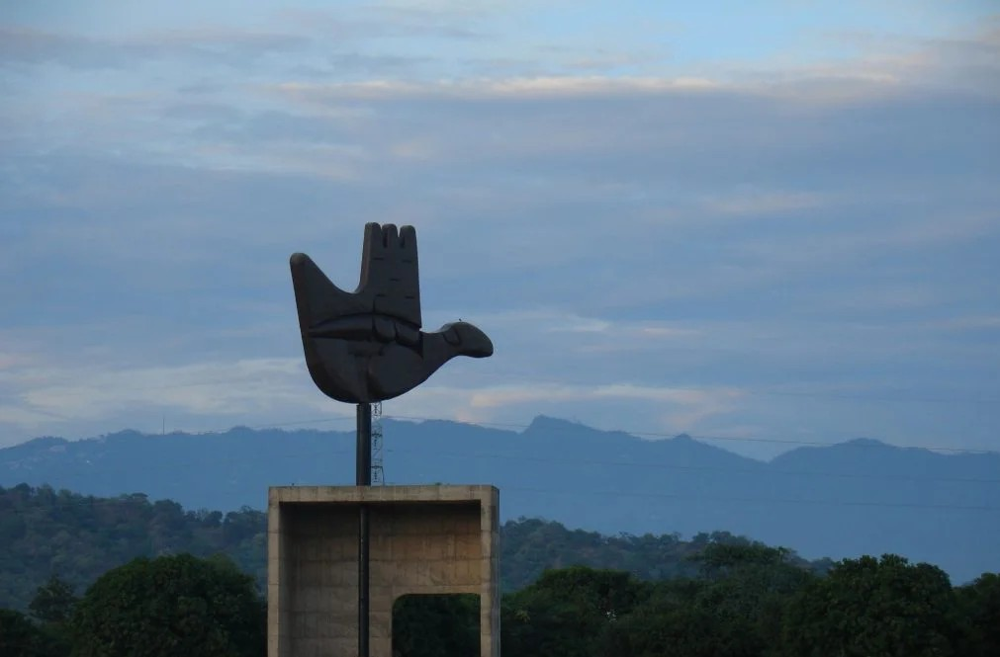
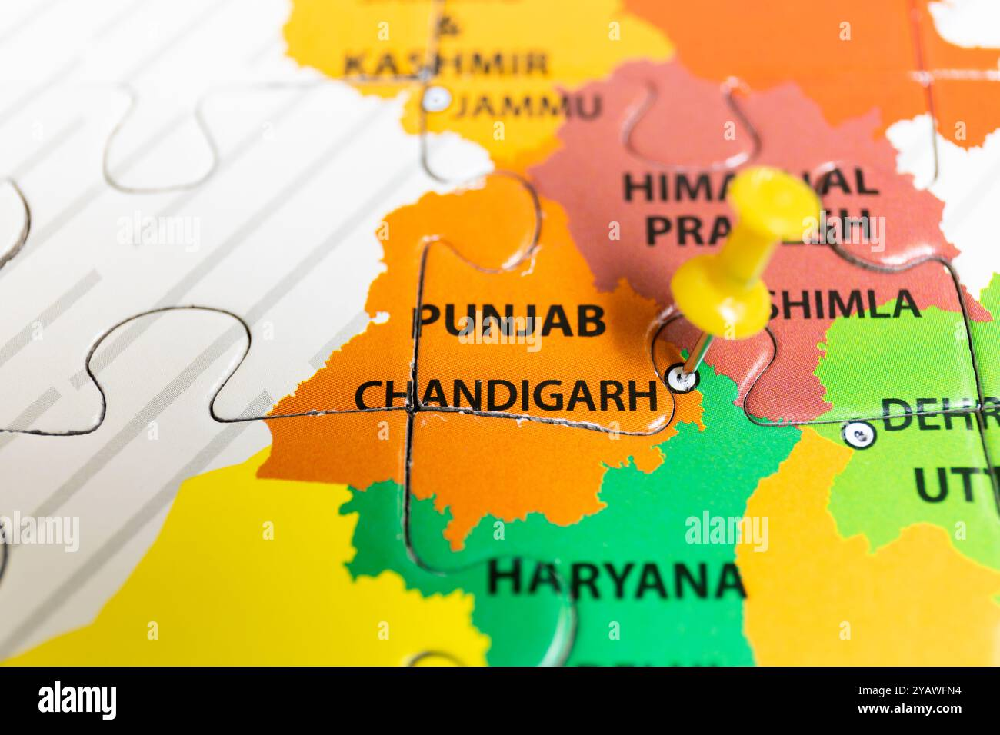

Introduction to Chandigarh
Chandigarh is a Union Territory of India and serves as the capital of both Punjab and Haryana. Located at the foothills of the Shivalik Hills, it is famously known as “The City Beautiful.” Designed by the renowned French architect Le Corbusier, Chandigarh is one of India’s best-planned cities. Developed after India’s independence in 1947, the city is admired for its organized sectors, wide roads, greenery, and high standard of living.

Chandigarh – The City Beautiful
Chandigarh truly lives up to its title, “The City Beautiful.” The city is divided into well-planned sectors with wide roads, green belts, parks, and open spaces. Known for its cleanliness and environmental balance, Chandigarh seamlessly blends modern urban development with nature, offering residents a peaceful and organized lifestyle.

Capital of Punjab & Haryana
Chandigarh holds a unique administrative status as the shared capital of both Punjab and Haryana. After the reorganization of Punjab in 1966, the city was declared a Union Territory. It houses major government offices, secretariats, and legislative buildings, making it a vital political and administrative center in northern India.

Planned City by Le Corbusier
The planning of Chandigarh by Le Corbusier introduced modern urban principles to India. The city was divided into self-sufficient sectors, each with residential areas, markets, schools, and open spaces. His design emphasized functionality, wide roads, greenery, proper drainage, and efficient traffic movement, making Chandigarh a model city for urban planning.